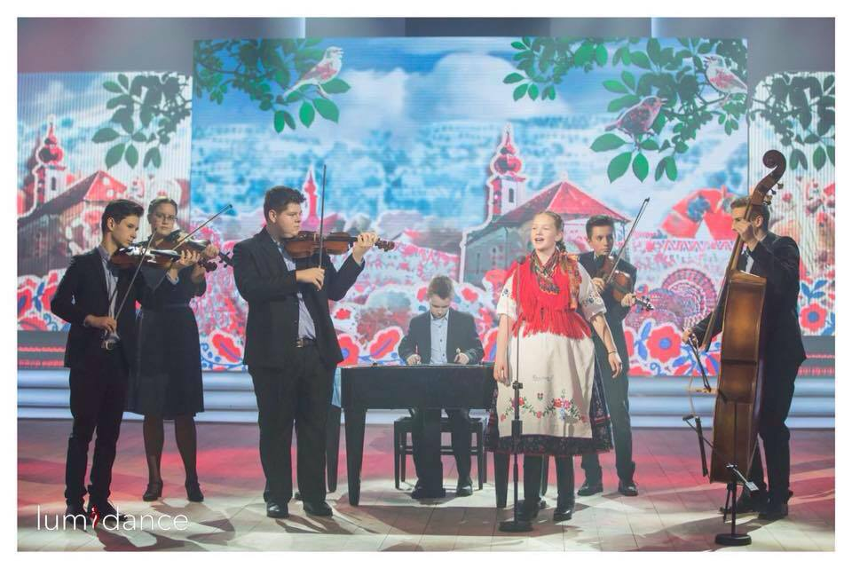

Elfoglaltságok
Zene és tánc:
Már nagyon fiatalon életem szerves részévé vált a néptán és a népzene. 10 éves koromban rengeteg díjat és versenyt nyertünk a zenekarommal és a tánccsoporttal. Ha minden terveim szerint alakul el szeretném végezni a zene akadémiát is.
- Elért eredmények:
- - 2016-os Fölszállott a páva középdöntőjébe jutás
- - 2017-es TEDx Youth előadó
- - Rajeczky Benjamin népzenei verseny: kiemelt arany (2015, 2016, 2017)
- - alapvizsga népi-hegedűből
- - Bonyhádi népzenei verseny: kiemelt arany (2018, 2019)
- - Viljandi folk fesztivál fellépő
Sportok: